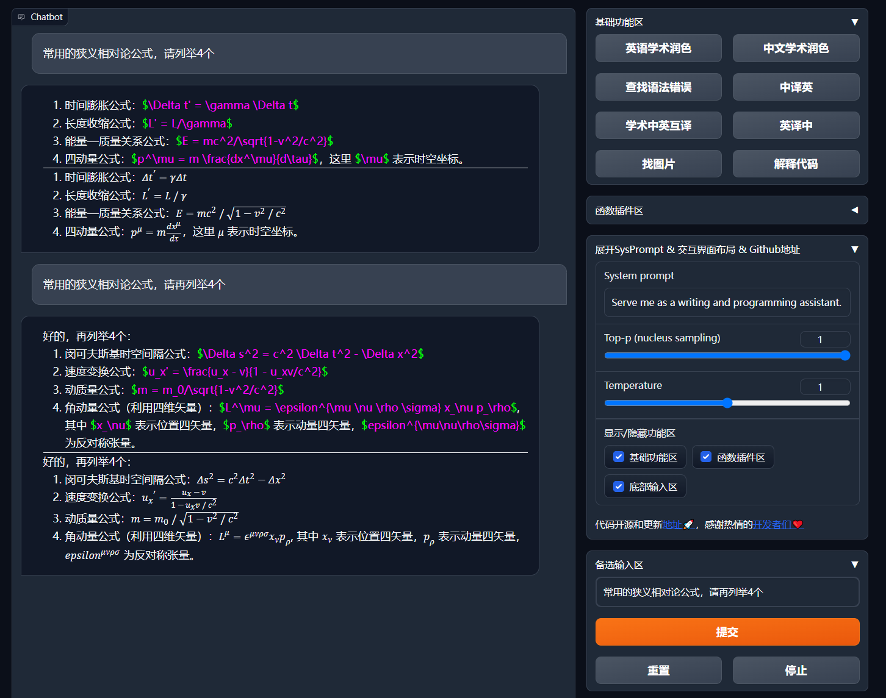
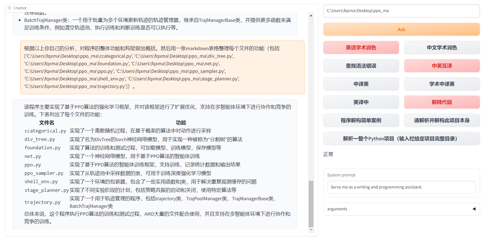
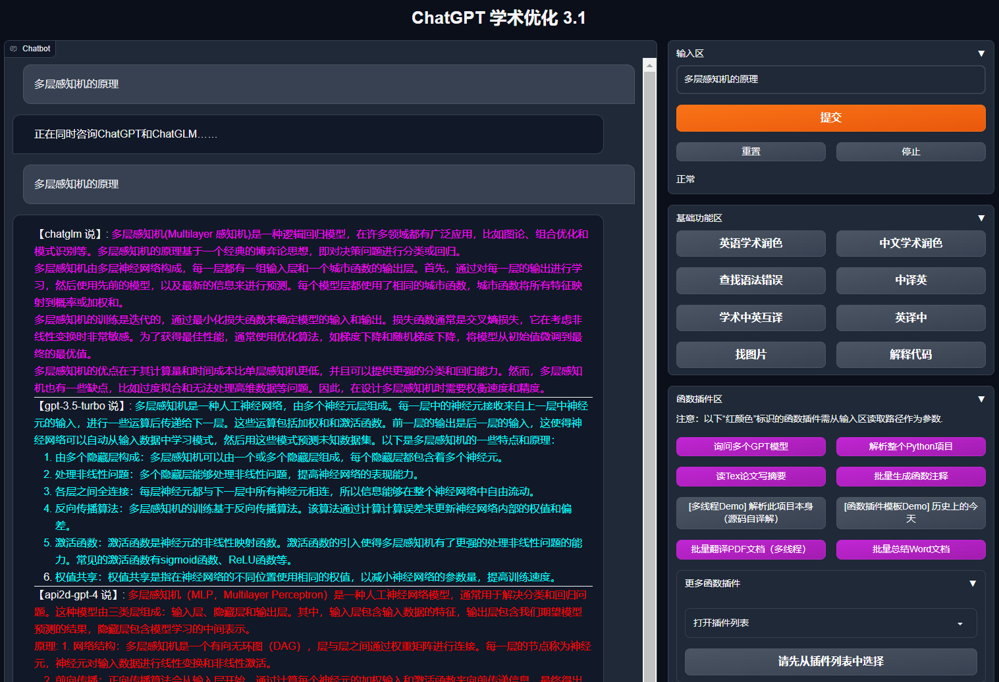
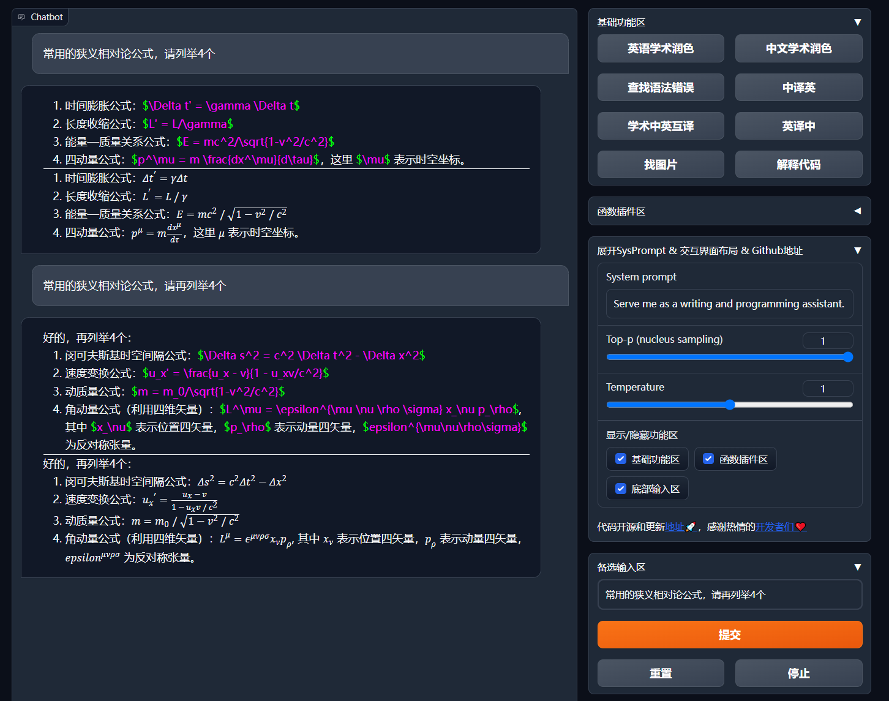
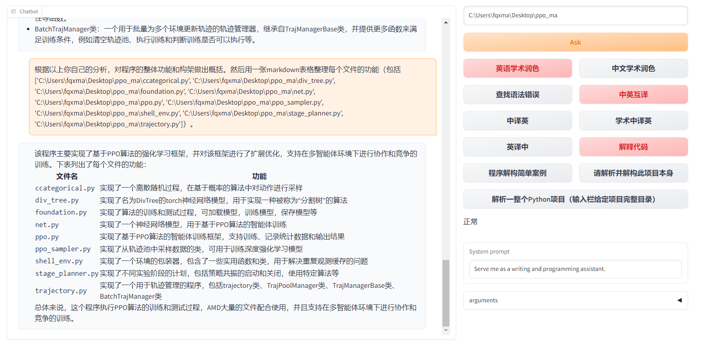
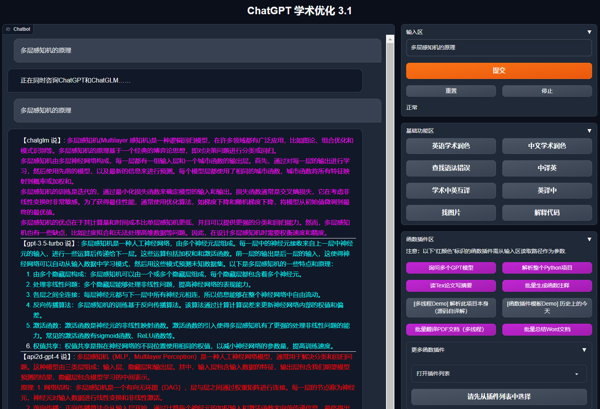

Gpt-Academic
 项目首页
项目首页
一键润色、一键中英互译、一键代码解释、chat分析报告生成、PDF论文全文翻译功能、互联网信息聚合+GPT等


 





 如何部署在线 Gpt-Academic
如何部署在线 Gpt-Academic
什么是 Gpt-Academic
- “GPT 学术优化”（GPT Academic）是一个专注于自然语言处理和生成的开源项目，旨在利用GPT模型来优化学术领域的任务。为GPT/GLM等LLM大语言模型提供实用化交互接口，特别优化论文阅读/润色/写作体验，模块化设计，支持自定义快捷按钮&函数插件，支持Python和C++等项目剖析&自译解功能，PDF/LaTex论文翻译&总结功能，支持并行问询多种LLM模型，支持chatglm3等本地模型。接入通义千问, deepseekcoder, 讯飞星火, 文心一言, llama2, rwkv, claude2, moss等。
功能列表
- 学术写作和编辑：提供工具和模型来帮助生成学术论文、摘要、文献综述等。通过微调模型，GPT Academic可以生成符合特定学术风格和格式的文本。
- 自动化文献综述：使用GPT模型来自动生成或补充文献综述，这对研究人员来说是一个省时的工具。
- 数据集和训练：该项目可能包括针对学术领域的数据集，用于微调和训练GPT模型，以提高其在处理学术文本时的准确性和相关性。
- 学术问答系统：开发基于GPT的问答系统，可以回答学术领域的特定问题，如数学、物理、历史等。
- 文本分类和主题分析：使用GPT模型来对学术论文进行分类或主题分析，帮助研究人员更好地组织和理解文献。